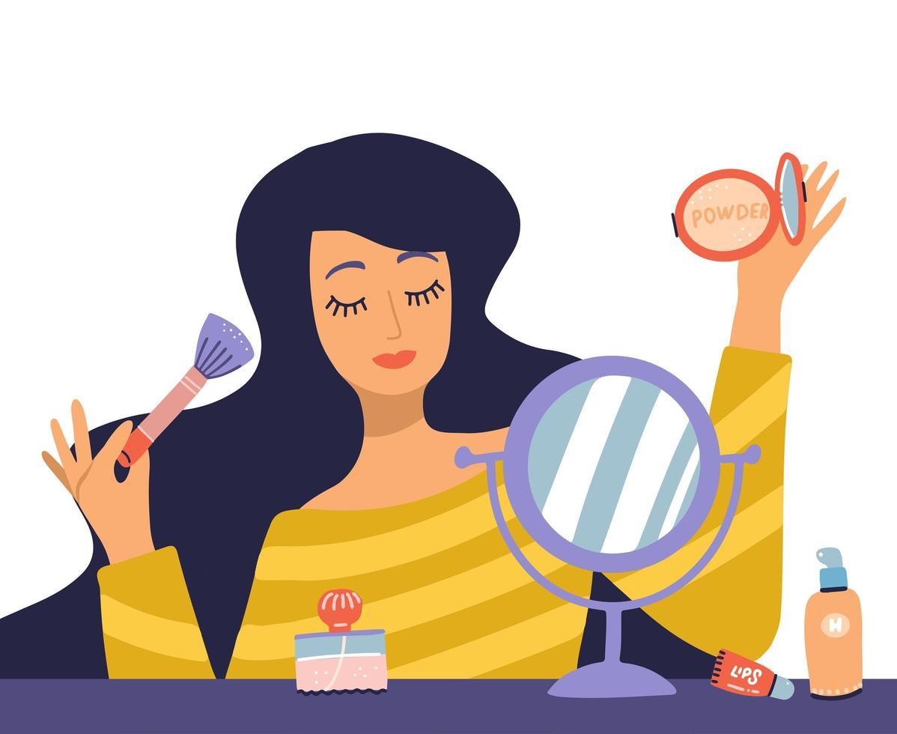

| 
|
Maquillaje
Se entiende por maquillaje, a la técnica destinada a realzar los rasgos faciales y
simultáneamente disimular los defectos para conseguir mayor armonía. A pesar de
en un primer nivel de análisis el maquillaje pudiera parecer una técnica decorativa
un tanto frívola, nada más lejos de la realidad.
|
|